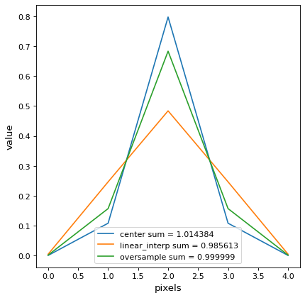

discretize_model¶
-
astropy.convolution.discretize_model(model, x_range, y_range=None, mode='center', factor=10)[source]¶ Function to evaluate analytical model functions on a grid.
So far the function can only deal with pixel coordinates.
- Parameters
- model
Modelor callable. Analytic model function to be discretized. Callables, which are not an instances of
Modelare passed tocustom_modeland then evaluated.- x_range
tuple x range in which the model is evaluated. The difference between the upper an lower limit must be a whole number, so that the output array size is well defined.
- y_range
tuple, optional y range in which the model is evaluated. The difference between the upper an lower limit must be a whole number, so that the output array size is well defined. Necessary only for 2D models.
- mode
str, optional - One of the following modes:
'center'(default)Discretize model by taking the value at the center of the bin.
'linear_interp'Discretize model by linearly interpolating between the values at the corners of the bin. For 2D models interpolation is bilinear.
'oversample'Discretize model by taking the average on an oversampled grid.
'integrate'Discretize model by integrating the model over the bin using
scipy.integrate.quad. Very slow.
- factor
floatorint Factor of oversampling. Default = 10.
- model
- Returns
- array
numpy.array Model value array
- array
Notes
The
oversamplemode allows to conserve the integral on a subpixel scale. Here is the example of a normalized Gaussian1D:import matplotlib.pyplot as plt import numpy as np from astropy.modeling.models import Gaussian1D from astropy.convolution.utils import discretize_model gauss_1D = Gaussian1D(1 / (0.5 * np.sqrt(2 * np.pi)), 0, 0.5) y_center = discretize_model(gauss_1D, (-2, 3), mode='center') y_corner = discretize_model(gauss_1D, (-2, 3), mode='linear_interp') y_oversample = discretize_model(gauss_1D, (-2, 3), mode='oversample') plt.plot(y_center, label='center sum = {0:3f}'.format(y_center.sum())) plt.plot(y_corner, label='linear_interp sum = {0:3f}'.format(y_corner.sum())) plt.plot(y_oversample, label='oversample sum = {0:3f}'.format(y_oversample.sum())) plt.xlabel('pixels') plt.ylabel('value') plt.legend() plt.show()

{kind=link}
{kind=link}